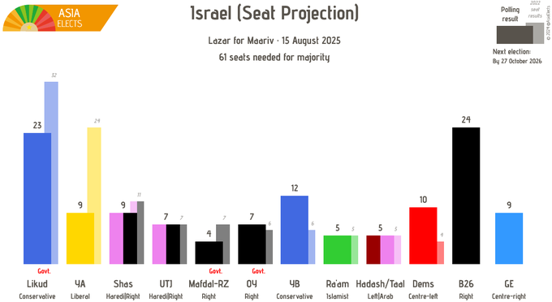

𝐀𝐬𝐡𝐥𝐞𝐲 𝐁𝐥𝐨𝐜𝐤🍥🌹🇹🇼🏳️⚧️
@bolckAshley
@Noa1016612 「中東唯一的民主國家」，唉🙌

Noa🌹
@Noa1016612
搞不懂以色列还有什么值得洗白的，对外种族灭绝，对内以色列的政党政治更是已经地狱绘图：且不说顽固反对两国方案和支持扩张定居点的极端民族主义政党利库德集团依旧在执政，并且得到了犹太教正统派极右翼友党的支持，支持卡汉主义、身负犹太法西斯主义指控的犹太力量党也在政府且有国会的一席之地。更 https://t.co/voIIxhfaoW https://t.co/4kPtJ9PxBn